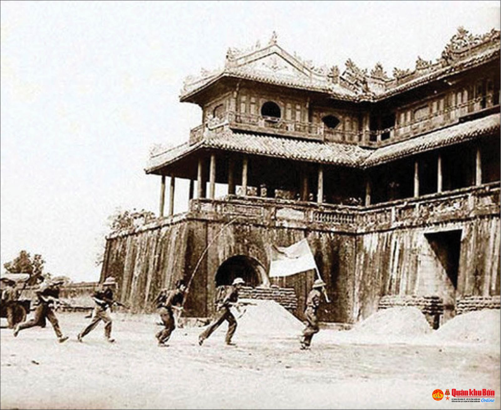
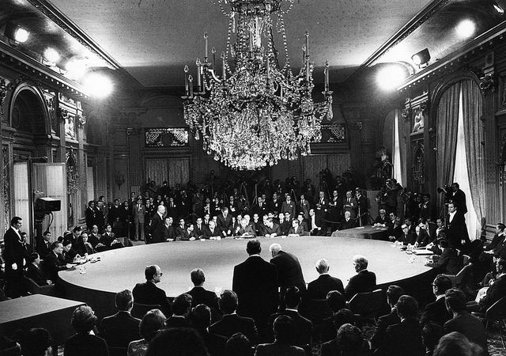

Tổng tiến công Tết Mậu Thân
30 tháng 1, 1968

Hiệp định Paris
27 tháng 1, 1973

Giải phóng Sài Gòn
30 tháng 4, 1975
Sau khi Việt Nam bị chia cắt vào năm 1954, cuộc đấu tranh thống nhất đất nước trở thành điều tất yếu. Sự can thiệp của Hoa Kỳ đã dẫn đến một cuộc chiến tranh kéo dài. Từ việc thành lập Mặt trận Dân tộc Giải phóng đến cuộc Tổng tiến công Tết Mậu Thân, cuộc kháng chiến chống Mỹ được đánh dấu bởi những cuộc xung đột dữ dội và các động thái chính trị, cuối cùng dẫn đến sự thống nhất của Việt Nam vào năm 1975.
"Chúng ta sẽ chiến đấu cho đến khi không còn một lính Mỹ nào ở Việt Nam."
30 tháng 1, 1968
27 tháng 1, 1973
30 tháng 4, 1975
Cuộc Tổng tiến công Tết Mậu Thân năm 1968 là một chiến dịch quân sự lớn trong Chiến tranh Việt Nam, do lực lượng Bắc Việt và Mặt trận Dân tộc Giải phóng miền Nam Việt Nam phát động chống lại miền Nam Việt Nam và các đồng minh, bao gồm Hoa Kỳ. Bắt đầu vào ngày 30 tháng 1 năm 1968, trong dịp Tết Nguyên Đán, chiến dịch bao gồm các cuộc tấn công phối hợp vào hơn 100 thành phố và căn cứ quân sự. Mặc dù đây là một thất bại chiến thuật đối với miền Bắc do tổn thất nặng nề, nhưng chiến dịch đã gây sốc cho Hoa Kỳ và làm suy yếu đáng kể sự ủng hộ của công chúng Mỹ đối với chiến tranh, đánh dấu một bước ngoặt trong cuộc xung đột.
"Cuộc Tổng tiến công Tết Mậu Thân cho thấy người dân Mỹ rằng chiến tranh ở Việt Nam còn lâu mới kết thúc."
Hiệp định Hòa bình Paris, được ký vào ngày 27 tháng 1 năm 1973, nhằm thiết lập hòa bình và chấm dứt Chiến tranh Việt Nam. Hiệp định này bao gồm Hoa Kỳ, Bắc Việt Nam, Nam Việt Nam và Mặt trận Dân tộc Giải phóng miền Nam Việt Nam, kêu gọi ngừng bắn, rút quân đội Hoa Kỳ và trao trả tù binh chiến tranh. Mặc dù tạm thời giảm bớt sự can thiệp trực tiếp của Hoa Kỳ, hiệp định không giải quyết được các căng thẳng cơ bản, dẫn đến sự sụp đổ của Sài Gòn và sự thống nhất của Việt Nam dưới sự lãnh đạo của Đảng Cộng sản vào năm 1975.
"Hiệp định đánh dấu một bước ngoặt, nhưng nó không kết thúc chiến tranh."

Ngày 30 tháng 4 năm 1975, Sài Gòn được giải phóng, đánh dấu sự kết thúc của Chiến tranh Việt Nam khi lực lượng Bắc Việt chiếm được Sài Gòn, thủ đô của miền Nam Việt Nam. Sự kiện này diễn ra sau Chiến dịch Hồ Chí Minh thành công, làm sụp đổ hoàn toàn phòng tuyến của miền Nam. Sự sụp đổ của Sài Gòn dẫn đến sự tan rã của chính quyền miền Nam và sự thống nhất của Việt Nam dưới sự lãnh đạo của Đảng Cộng sản. Hình ảnh những chiếc trực thăng sơ tán nhân viên Hoa Kỳ và người tị nạn trở thành biểu tượng của sự kết thúc chiến tranh.
"Sài Gòn đã hoàn toàn giải phóng."
Cuộc kháng chiến chống Mỹ kéo dài hai thập kỷ đã có tác động sâu sắc đến Việt Nam và thế giới. Nó dẫn đến sự thống nhất của Việt Nam dưới sự lãnh đạo của Đảng Cộng sản, chấm dứt sự can thiệp quân sự của Hoa Kỳ ở Đông Nam Á và đánh dấu một chương quan trọng trong cuộc đấu tranh chống chủ nghĩa đế quốc toàn cầu. Mặc dù chiến tranh gây ra nhiều đau thương và mất mát, nhưng nó cũng thể hiện tinh thần kiên cường của người dân Việt Nam và quyết tâm giành lại độc lập. Di sản của cuộc chiến được ghi nhớ cả ở Việt Nam và trên thế giới, định hình tương lai của cả hai quốc gia.